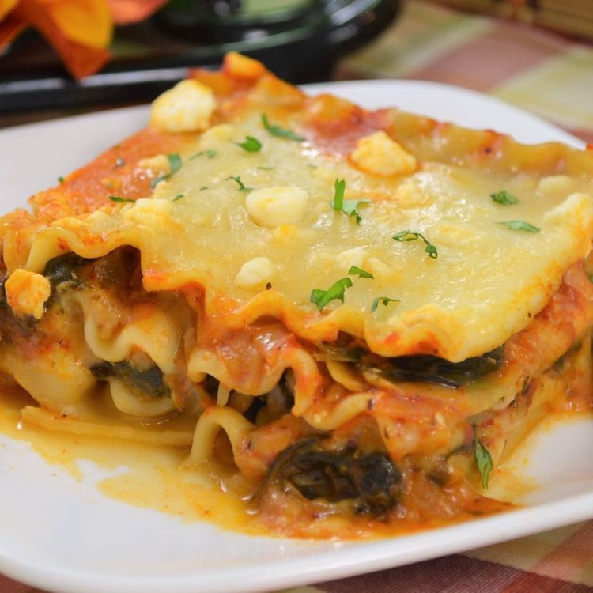

Lasagna

This is a fabulous lasagna made with an artichoke and spinach mixture which has been cooked with vegetable broth, onions and garlic. The mixture is layered with lasagna noodles, pasta sauce, mozzarella cheese, and topped with crumbled feta.
Ingredients
- cooking spray
- 9 uncooked lasagna noodles
- 1 large onion, chopped
- 4 cloves garlic, chopped
- 3 cups shredded mozzarella cheese, divided
- Preheat oven to 375 degrees F (190 degrees C). Spray a 9x13 inch baking dish with cooking spray.
- Bring a large pot of lightly salted water to a boil. Add noodles and cook for 8 to 10 minutes or until al dente; drain.
- Spray a large skillet with cooking spray and heat on medium-high. Saute onion and garlic for 3 minutes, or until onion is tender-crisp.
- Spread 1/4 of the artichoke mixture in the bottom of the prepared baking dish; top with 3 cooked noodles.
- Bake, covered, for 40 minutes. Uncover, and bake 15 minutes more, or until hot and bubbly. Let stand 10 minutes before cutting..